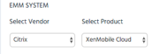
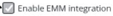

For Cloud, you will also need to enter your API credentials and click Validate. Once your credentials are valid, proceed to the next step.
Use the EMM System and Appthority Connector sections of the Organization sub-tab to set these options for your organization.
Note: Each Appthority Connector is mapped to a unique ORG ID.
To set EMM and Connector options

Tip: Once you select Enable EMM integration in Admin > Organization, you must have an active Connector before the EMM sub-tab will be available. Complete Connector deployment (for on-premises) or enter api credentials and wait briefly (for cloud).
Appthority Connector will display active status once Connector is running. 
You may also need to refresh the page to update and display the EMM tab.
Important: If you are using App Scan and want to stop, you must deactivate it in AirWatch (click Reconfigure). You will not be able to deselect it in Appthority until you have done this. Also, the checkbox to Enable EMM Integration on the Organization sub-tab can not be deselected until you disable App Scan in AirWatch, and will appear grayed out.
